2022 Advanced Higher Chemistry - Paper 1 questions
Source: Scottish Qualifications Authority (SQA) / Qualifications Scotland. This is a StemInteract HTML companion, not an official HTML edition. Selectable text is supplied alongside original page images. Use the images or original PDF for equations, powers, fractions, vector notation, tables and diagrams; text extraction cannot fully preserve mathematical layout.
Jump to a question
PDF page 1
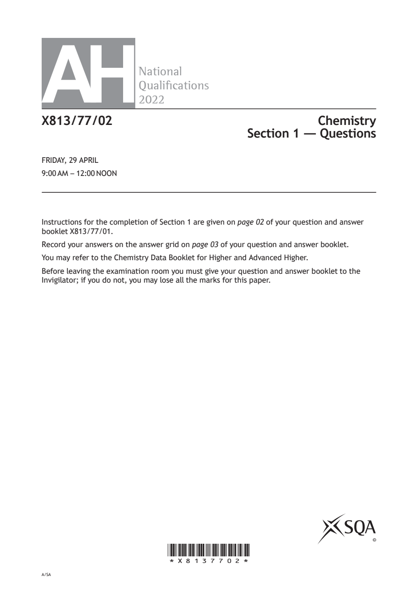
Selectable page text
AH
National
Qualications
2022
X813/77/02 Chemistry
Section 1 — Questions
FRIDAY, 29 APRIL
9:00 AM – 12:00 NOON
Instructions for the completion of Section 1 are given on page 02 of your question and answer
booklet X813/77/01.
Record your answers on the answer grid on page 03 of your question and answer booklet.
You may refer to the Chemistry Data Booklet for Higher and Advanced Higher.
Before leaving the examination room you must give your question and answer booklet to the
Invigilator; if you do not, you may lose all the marks for this paper.
©
*X8137702*
A/SAPDF page 2
Paper 1, Question 1Paper 1, Question 2Paper 1, Question 3Paper 1, Question 4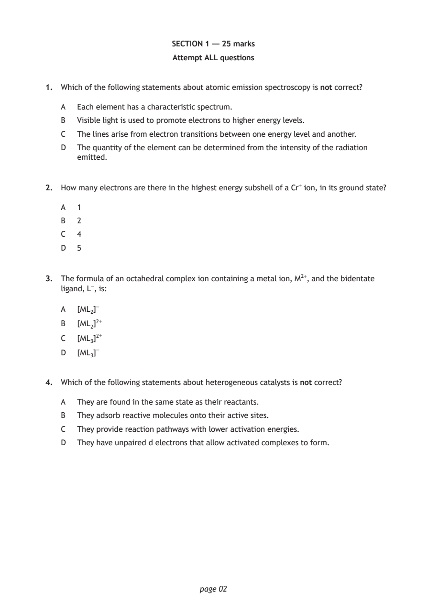
Selectable page text
SECTION 1 — 25 marks
Attempt ALL questions
1. Which of the following statements about atomic emission spectroscopy is not correct?
A Each element has a characteristic spectrum.
B Visible light is used to promote electrons to higher energy levels.
C The lines arise from electron transitions between one energy level and another.
D The quantity of the element can be determined from the intensity of the radiation
emitted.
2. How many electrons are there in the highest energy subshell of a Cr⁺ ion, in its ground state?
A 1
B 2
C 4
D 5
3. The formula of an octahedral complex ion containing a metal ion, M²⁺, and the bidentate
ligand, L⁻, is:
A [ML₂]⁻
B [ML₂]²⁺
C [ML₃]²⁺
D [ML₃]⁻
4. Which of the following statements about heterogeneous catalysts is not correct?
A They are found in the same state as their reactants.
B They adsorb reactive molecules onto their active sites.
C They provide reaction pathways with lower activation energies.
D They have unpaired d electrons that allow activated complexes to form.
page 02PDF page 3
Paper 1, Question 5Paper 1, Question 6Paper 1, Question 7Paper 1, Question 8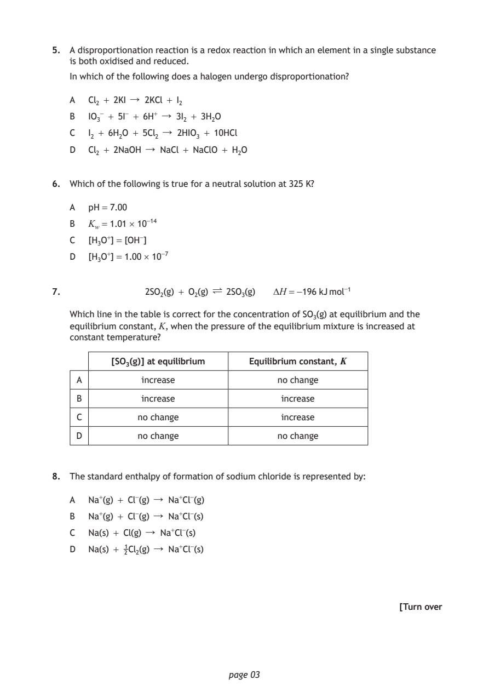
Selectable page text
5. A disproportionation reaction is a redox reaction in which an element in a single substance
is both oxidised and reduced.
In which of the following does a halogen undergo disproportionation?
A Cl₂ + 2KI ↓ 2KCl + I₂
B IO₃⁻ + 5I⁻ + 6H⁺ ↓ 3I₂ + 3H₂O
C I₂ + 6H₂O + 5Cl₂ ↓ 2HIO₃ + 10HCl
D Cl₂ + 2NaOH ↓ NaCl + NaClO + H₂O
6. Which of the following is true for a neutral solution at 325 K?
A pH = 7.00
B K_{w} = 1.01 × 10⁻¹⁴
C [H₃O⁺] = [OH⁻]
D [H₃O⁺] = 1.00 × 10⁻⁷
7. 2SO₂(g) + O₂(g) Ý 2SO₃(g) ΔH = −196 kJ mol⁻¹
Which line in the table is correct for the concentration of SO₃(g) at equilibrium and the
equilibrium constant, K, when the pressure of the equilibrium mixture is increased at
constant temperature?
[SO₃(g)] at equilibrium Equilibrium constant, K
A increase no change
B increase increase
C no change increase
D no change no change
8. The standard enthalpy of formation of sodium chloride is represented by:
A Na⁺(g) + Cl⁻(g) ↓ Na⁺Cl⁻(g)
B Na⁺(g) + Cl⁻(g) ↓ Na⁺Cl⁻(s)
C Na(s) + Cl(g) ↓ Na⁺Cl⁻(s)
D Na(s) + 1Cl₂(g) ↓ Na⁺Cl⁻(s)
2
[Turn over
page 03PDF page 4
Paper 1, Question 9Paper 1, Question 10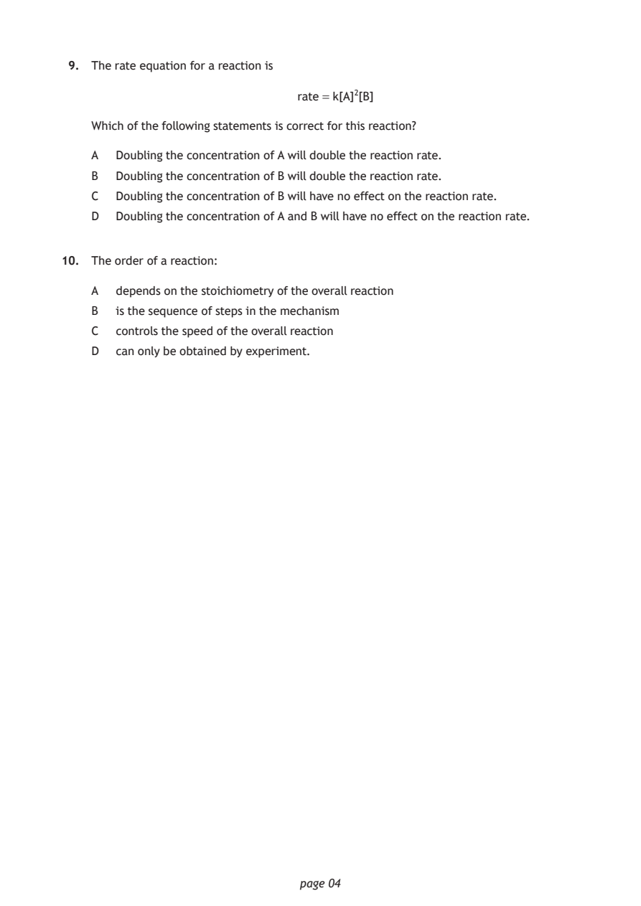
Selectable page text
9. The rate equation for a reaction is
rate = k[A]²[B]
Which of the following statements is correct for this reaction?
A Doubling the concentration of A will double the reaction rate.
B Doubling the concentration of B will double the reaction rate.
C Doubling the concentration of B will have no effect on the reaction rate.
D Doubling the concentration of A and B will have no effect on the reaction rate.
10. The order of a reaction:
A depends on the stoichiometry of the overall reaction
B is the sequence of steps in the mechanism
C controls the speed of the overall reaction
D can only be obtained by experiment.
page 04PDF page 5
Paper 1, Question 11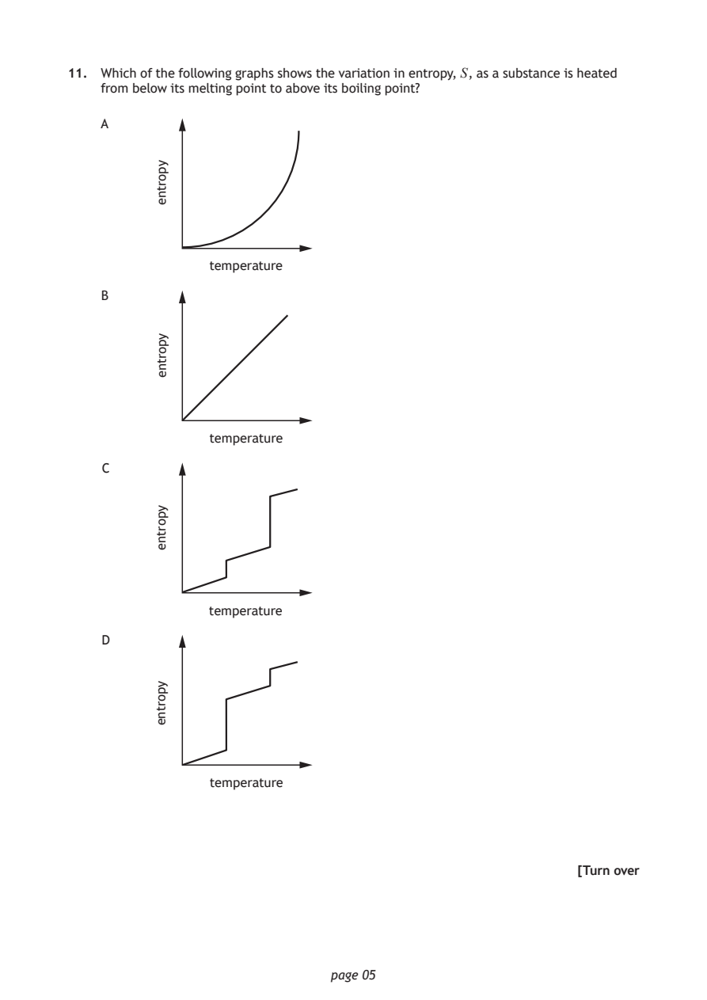
Selectable page text
11. Which of the following graphs shows the variation in entropy, S , as a substance is heated
from below its melting point to above its boiling point?
A
page 05
yportne
temperature
yportne
temperature
yportne
temperature
yportne
B
C
D
temperature
[Turn overPDF page 6
Paper 1, Question 12Paper 1, Question 13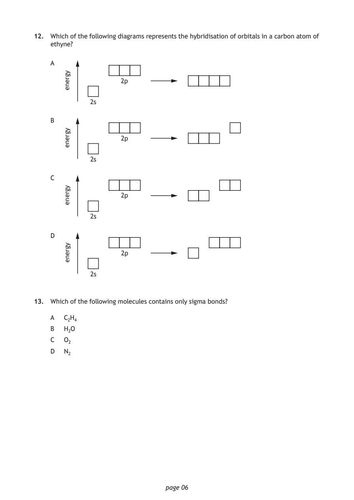
Selectable page text
12. Which of the following diagrams represents the hybridisation of orbitals in a carbon atom of
ethyne?
A
page 06
ygrene
2p
2s
ygrene
2p
2s
ygrene
2p
2s
ygrene
B
C
D
2p
2s
13. Which of the following molecules contains only sigma bonds?
A C₂H₄
B H₂O
C O₂
D N₂PDF page 7
Paper 1, Question 14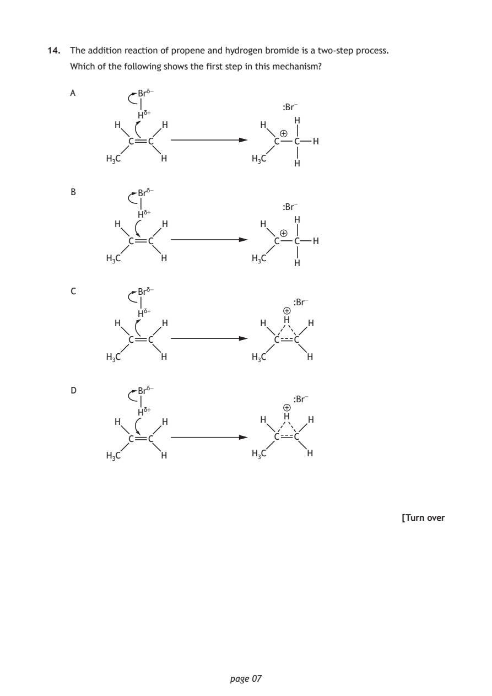
Selectable page text
14. The addition reaction of propene and hydrogen bromide is a two‑step process.
Which of the following shows the first step in this mechanism?
A Br^{δ}⁻
:Br⁻
H^{δ}⁺
H
H H H
C C C C H
H₃C H H₃C
H
B Br^{δ}⁻
:Br⁻
H^{δ}⁺
H
H H H
C C C C H
H₃C H H₃C
H
C Br^{δ}⁻
:Br⁻
H^{δ}⁺
H
H H H H
C C C C
H₃C H H₃C H
D Br^{δ}⁻
:Br⁻
H^{δ}⁺
H
H H H H
C C C C
H₃C H H₃C H
[Turn over
page 07PDF page 8
Paper 1, Question 15Paper 1, Question 16Paper 1, Question 17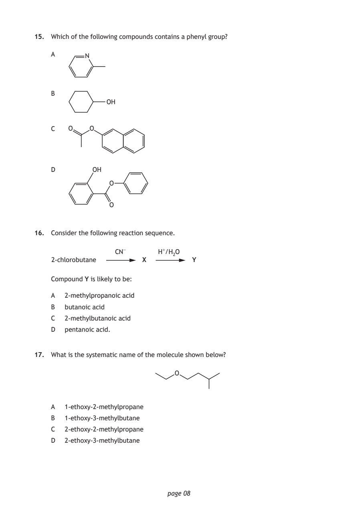
Selectable page text
15. Which of the following compounds contains a phenyl group?
A N
B
OH
C O O
D OH
O
O
16. Consider the following reaction sequence.
CN⁻ H⁺/H₂O
2‑chlorobutane X Y
Compound Y is likely to be:
A 2‑methylpropanoic acid
B butanoic acid
C 2‑methylbutanoic acid
D pentanoic acid.
17. What is the systematic name of the molecule shown below?
O
A 1‑ethoxy‑2‑methylpropane
B 1‑ethoxy‑3‑methylbutane
C 2‑ethoxy‑2‑methylpropane
D 2‑ethoxy‑3‑methylbutane
page 08PDF page 9
Paper 1, Question 18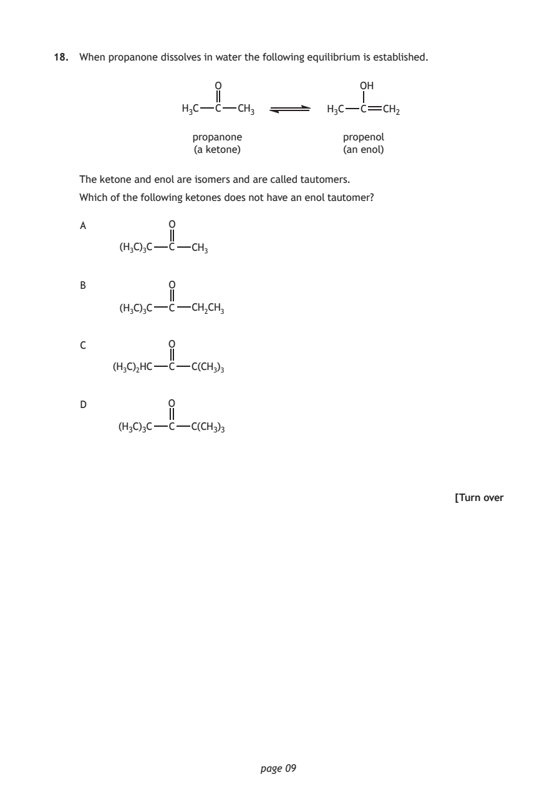
Selectable page text
18. When propanone dissolves in water the following equilibrium is established.
O OH
H₃C C CH₃ H₃C C CH₂
propanone propenol
(a ketone) (an enol)
The ketone and enol are isomers and are called tautomers.
Which of the following ketones does not have an enol tautomer?
A O
(H₃C)₃C C CH₃
B O
(H₃C)₃C C CH₂CH₃
C O
(H₃C)₂HC C C(CH₃)₃
D O
(H₃C)₃C C C(CH₃)₃
[Turn over
page 09PDF page 10
Paper 1, Question 19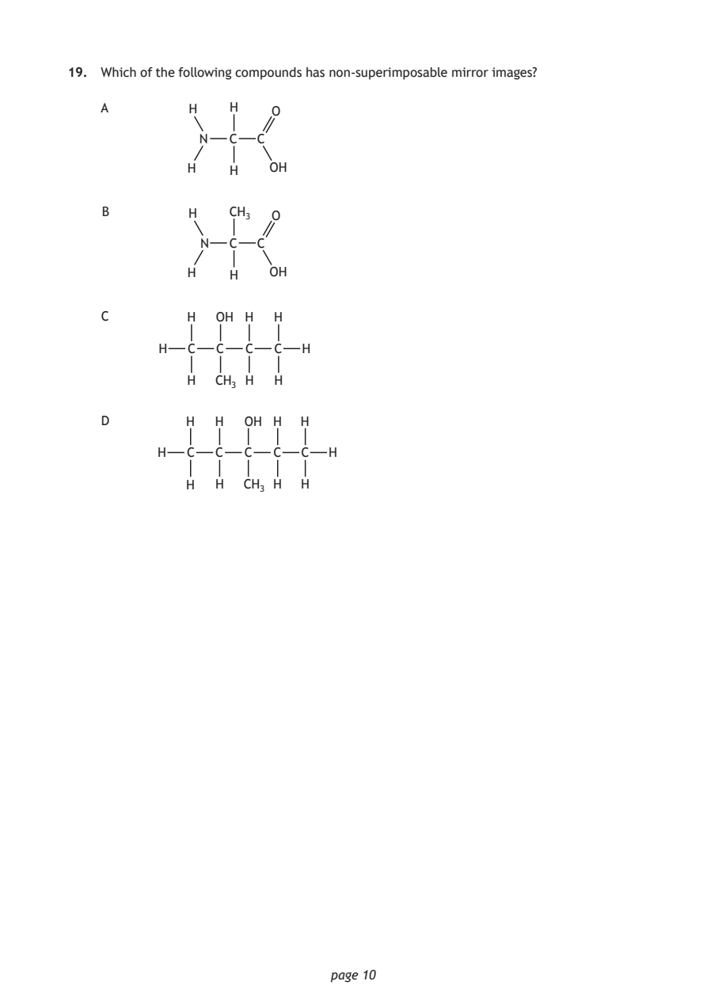
Selectable page text
19. Which of the following compounds has non‑superimposable mirror images?
A H H O
N C C
H H OH
B H CH₃ O
N C C
H H OH
C H OH H H
H C C C C H
H CH₃ H H
D H H OH H H
H C C C C C H
H H CH₃ H H
page 10PDF page 11
Paper 1, Question 20Paper 1, Question 21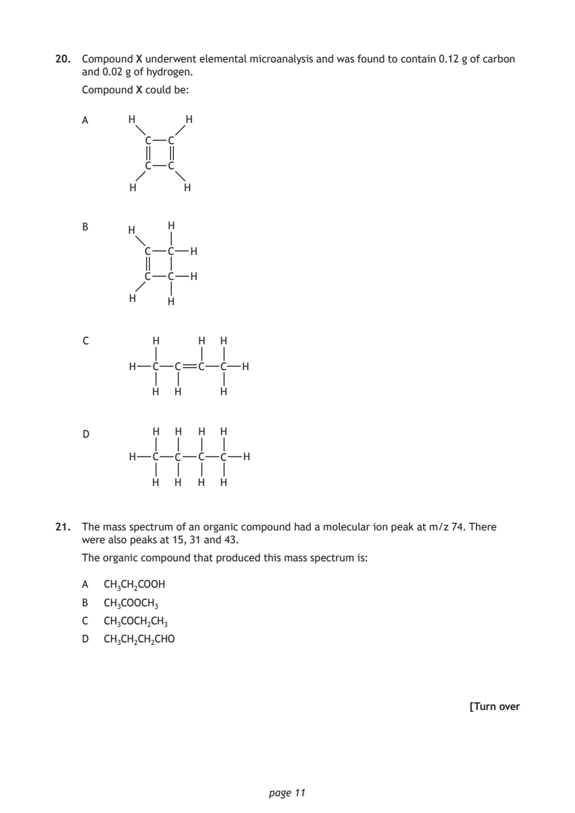
Selectable page text
20. Compound X underwent elemental microanalysis and was found to contain 0.12 g of carbon
and 0.02 g of hydrogen.
Compound X could be:
A H H
C C
C C
H H
B H
H
C C H
C C H
H
H
C H H H
H C C C C H
H H H
D H H H H
H C C C C H
H H H H
21. The mass spectrum of an organic compound had a molecular ion peak at m/z 74. There
were also peaks at 15, 31 and 43.
The organic compound that produced this mass spectrum is:
A CH₃CH₂COOH
B CH₃COOCH₃
C CH₃COCH₂CH₃
D CH₃CH₂CH₂CHO
[Turn over
page 11PDF page 12
Paper 1, Question 22Paper 1, Question 23Paper 1, Question 24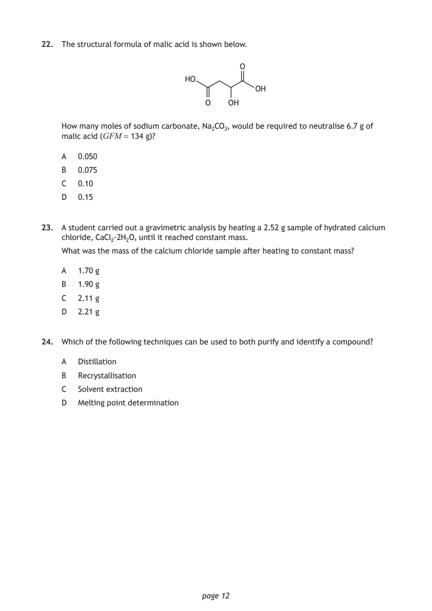
Selectable page text
22. The structural formula of malic acid is shown below.
O
HO
OH
O OH
How many moles of sodium carbonate, Na₂CO₃, would be required to neutralise 6.7 g of
malic acid (GFM = 134 g)?
A 0.050
B 0.075
C 0.10
D 0.15
23. A student carried out a gravimetric analysis by heating a 2.52 g sample of hydrated calcium
chloride, CaCl₂·2H₂O, until it reached constant mass.
What was the mass of the calcium chloride sample after heating to constant mass?
A 1.70 g
B 1.90 g
C 2.11 g
D 2.21 g
24. Which of the following techniques can be used to both purify and identify a compound?
A Distillation
B Recrystallisation
C Solvent extraction
D Melting point determination
page 12PDF page 13
Paper 1, Question 25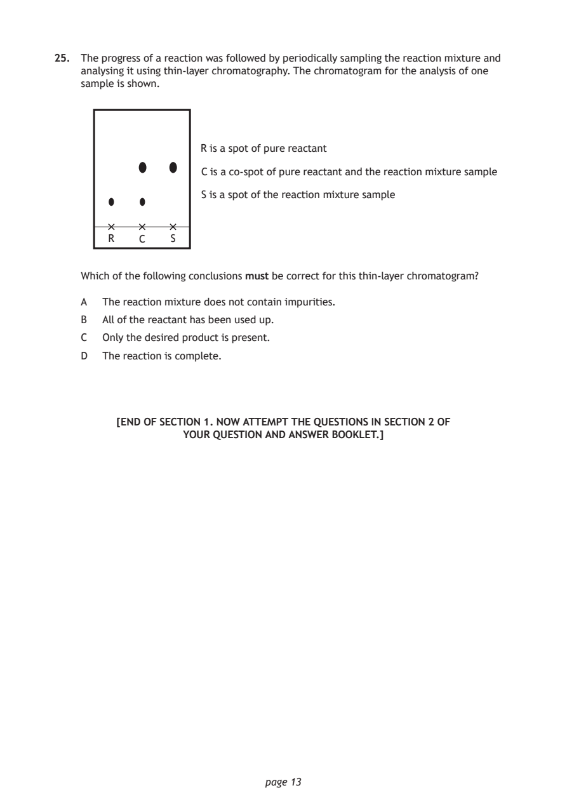
Selectable page text
25. The progress of a reaction was followed by periodically sampling the reaction mixture and
analysing it using thin‑layer chromatography. The chromatogram for the analysis of one
sample is shown.
R is a spot of pure reactant
C is a co‑spot of pure reactant and the reaction mixture sample
S is a spot of the reaction mixture sample
R C S
Which of the following conclusions must be correct for this thin‑layer chromatogram?
A The reaction mixture does not contain impurities.
B All of the reactant has been used up.
C Only the desired product is present.
D The reaction is complete.
[END OF SECTION 1. NOW ATTEMPT THE QUESTIONS IN SECTION 2 OF
YOUR QUESTION AND ANSWER BOOKLET.]
page 13PDF page 14

Selectable page text
[BLANK PAGE]
DO NOT WRITE ON THIS PAGE
page 14PDF page 15

Selectable page text
[BLANK PAGE]
DO NOT WRITE ON THIS PAGE
page 15PDF page 16
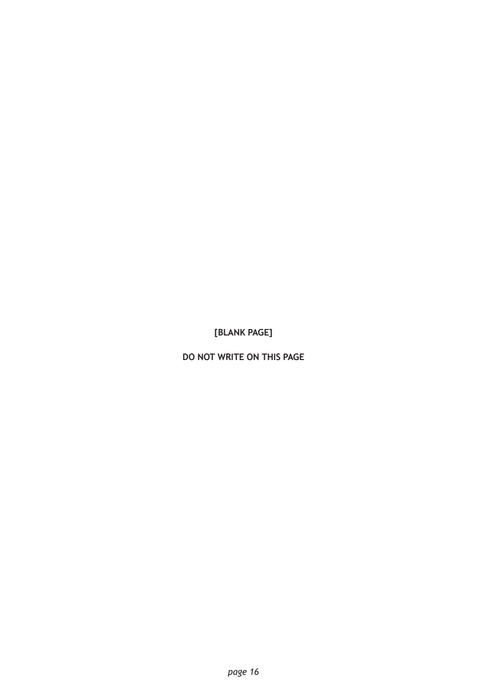
Selectable page text
[BLANK PAGE]
DO NOT WRITE ON THIS PAGE
page 16